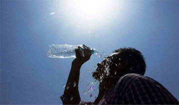

Earth provides enough to satisy every person's need,but not every person's greed
A Report released by climate experts at climate central said the month of june, july and august 2024 recorded the hottest season since 1970.
climate experts, joseph giguere and andrew pershing, cities that were most influenced in india are thiruvananthapuram, kavaratti, poet blair including maharashtra's vasai, virar, thane and mumbai. all these cities experienced over 70 days of high temperature because of climate change
according to CCRI(Climate change Research Institute),at current position climate change has become one of the greatest threats for humans and animals. the global mean teperature from the past twelve months (feb 2023 - jan 2024)is the highest on record, 0.64°C above the 1991-2020 average and 1.52°C above the 1850-1900 pre-industrial average and is incresing further. changing environment and ecology due to climate change are impacting food security, water supply, infrastructure, transportation, agriculture, energy, human health and sustainable growth.the safe limit is set to be 1.5°C by 2050.

a glacier is considered in balance when the amount of snow that falls and accumulates at it's surface is equal to the amount of ice lost through melting, evaporation and other processes.
but with annual air temperature in the ARCTIC increasing faster than anywhere else in the world, that balance is no longer achievable in Greenland. the glaciers are being melted by heat from above and below simultaneously. although the warm air and the warm water contribute to melting individually.
IN ANTARCTICA where similar surface and ocean melting processes occur, the topography and bedrock on which the ice sheet sits significantly influence the ice sheets stability and its contribution to sea level rise.

physical infrastructure includes bridges, roads, ports, electrical grids and other parts of our
transportation and communication systems.most communities have infrastructure that was designed without climate
change in mind.
existing infrastructure may not be able to withstand extreme weather events that bring heavy
rain, floods, wind, snow or temperature changes.impacts that results from these events occur in many different ways.
for example:increased temperatures require more indoor cooling, which can put stress on an
energy grid.sudden heavy rainfall that exceeds storm water drainage capacity can lead to flooding that
shuts down highways, major transportation routes and businesses. sea level rise can
also lead to coastal erosion and high-tide flooding.
resilience education is important for every role of our society,includes city
planners, emergency managers, educators, risk communiocators.everyone can learn how to prepare for climate change
through resiliency education.